Code
library(knitr)
library(tidyverse)
library(flextable)
library(ftExtra)
library(gt)Por: Aucencia Emeterio-Lara, Mariana Hernández-Apolinar y Raymond L. Tremblay
library(knitr)
library(tidyverse)
library(flextable)
library(ftExtra)
library(gt)Con la finalidad de describir el estado de conservación, los estudios de dinámica poblacional se centran en evaluar los cambios en abundancia (i.e. número de individuos) de las poblaciones y entender los procesos biológicos y abióticos que influyen en la variación de dicha abundancia en el tiempo (Silvertown & Charlesworth, 2009). En el presente capítulo se destacan algunos aspectos a considerar cuando planeamos iniciar el estudio poblacional de una orquídea de interés. Esta información tiene como objetivo ayudar a planificar las actividades de campo, conocer y manejar información que facilite una toma de datos consistente y evite errores durante su colecta. Es así que se incluyen desde aspectos biológicos hasta técnicas de muestreo, marcaje (i.e. captura) y seguimiento (i.e. recaptura) que son de utilidad en este proceso. En este sentido, y dada la amplia diversidad morfológica en las orquídeas, previo a la salida de campo es recomendable adquirir experiencia en gabinete y campo a través de búsqueda bibliográfica y consulta a expertos y cultivadores.
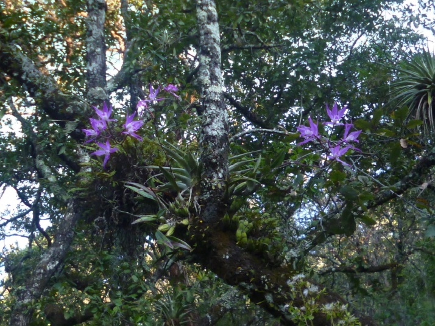
En la búsqueda de poblaciones en el medio natural, no solo es importante conocer el tipo de vegetación en que se distribuye de la especie de interés, también es esencial saber su tipo de crecimiento. Este sugiere el sustrato o el hábitat en el que se establecen y desarrollan las orquídeas en el medio natural, el cual puede ser: terrestre, epífito o rupícola; éste último también llamado litófito (Téllez & Flores, 2007). Como es evidente en el primer caso, las plantas crecen en suelo, en el segundo sobre ramas y troncos de los árboles, mientras que en el tercero sobre rocas. Cabe señalar que el tipo de crecimiento es distintivo de algunas subfamilias; por ejemplo, las especies de Cypripedioideae, Orchidoideae y Sphirantoideae se destacan por ser predominantemente terrestres, mientras que las de Epidendroideae por ser mayormente epífitas (Cribb, 1999). No obstante, Rasmussen (1999) señala que las especies no están estrictamente limitadas a un tipo de crecimiento ; es decir, hay especies como Dipodium que son epífitas y terrestres o los géneros Lepanthes y Laelia que pueden ser epífitas y rupícolas (Figura CDC.1).
Durante la búsqueda de las poblaciones en campo, es importante tener un entrenamiento que facilite la identifican de la especie de interés. Un primer acercamiento puede ser a partir de su apariencia (A) y uno muy preciso es aquel basado en la determinación botánica (B).
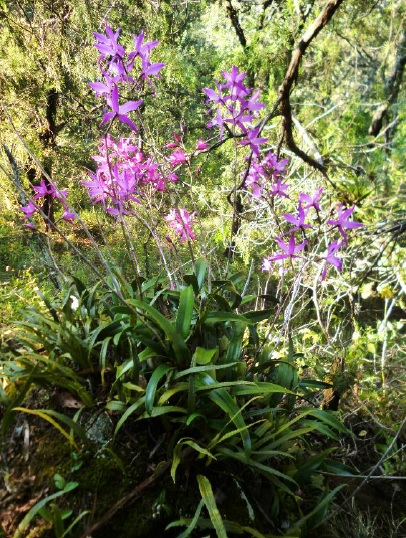


Cabe señalar que, si bien esta clasificación es de utilidad y brinda una idea de la amplia diversidad en la morfología vegetativa de las orquídeas, hay que considerar que solo se basa en su apariencia y facilita su identificación visual grosso modo, por lo que es cualitativa y poco rigurosa desde el punto de vista botánico.
Por otra parte, el apoyo de un experto es necesario cuando dos o más especies del mismo género comparten el hábitat. En estos casos, es posible confundir o mezclar individuos de distintas especies, debido a que pueden presentar características morfológicas o florales muy similares. Por ejemplo, en el género Lepanthes es difícil diferenciar la especie de los individuos recién germinados (Tremblay comm. pers.), ya que morfológicamente son muy similares, por lo que el apoyo de un botánico es de gran ayuda para resolver este y otros dilemas. Esta similitud en la morfología de la primeras etapas de vida puede que sean tan similares que las Bromeliads y Orquídeas se pueden confundir para una persona sin experiencia.
Si bien las poblaciones se conforman de individuos de la misma especie, en los estudios demográficos se considera que dichos individuos contribuyen a la abundancia de la población de forma distinta. Esto se debe a que, al igual que los seres humanos, las plantas presentan distintas edad, etapas o estados de desarrollo a lo largo de su vida (ver Capítulo X. Ciclo de Vida). En los humanos estas etapas se refieren a los recién nacidos (i.e. bebes), los infantes, los adolescentes y los adultos, mientras que en las plantas se trata de las semillas, las plántulas, los juveniles, los adultos tamaño pequeño, los adultos grande, etc.
Cada una de las etapas en las plantas se debería asocias a características biológicas y morfológicas particulares que permiten reconocerlas y diferenciarlas con relativa facilidad en campo. Por ejemplo, la presencia de flores, frutos o varas florales frescas o secas (i.e. escapos florales) se vincula con la fase adulta en las orquídeas y la presencia de estas estructuras también permiten, en primera instancia, diferenciar a los adultos del resto de la población. Como orquidófilos, la fase adulta es la etapa con la que estamos más familiarizados; sin embargo, una población también está conformada de individuos no reproductivos: plantas juveniles de aspecto similar a las adultas pero sin estructuras reproductivas (i.e. flores, inflorescencias y/o frutos), plántulas o individuos pequeños recién nacidos o establecidos y semillas que perpetúan y dispersan a la especie; clasificación que es denominada estructura poblacional (Silvertown & Charlesworth, 2009).
En la separación de las etapas de desarrollo, el trabajo de Tremblay y colaboradores (Tremblay & Hutchings, 2003) con Lepanthes es de utilidad para ilustrar el tipo de características a considerar. En este caso, para diferenciar las plántulas de los juveniles, los autores utilizaron la presencia de una vaina lepantiforme (lepanthiform sheath) en al menos en uno de los peciolos; es decir, los individuos no reproductivos fueron considerados plántulas si carecían de esta estructura. Por su parte, para diferenciar los juveniles de los adultos consideraron, además las vainas en peciolos, la presencia de inflorescencias secas y activas; éstas últimas en floración, con un escapo en desarrollo (sugiere floración potencial) y/o con un escapo seco, indicando una floración previa (Figura CDC.2).
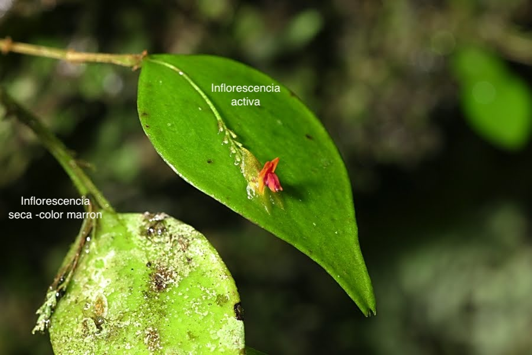
En las plantas, la estructura de etapas del ciclo de vida de una población debe incluir un número mayor o menor a las cuatro etapas/estados ya mencionados (i.e. semillas, plántulas, juveniles y adultos). Este se debe a que las categorías pueden subdividirse o unirse, como se verá posteriormente en la sección: Ejemplos de categorización en especies de estudio. Sin importar el número de etapas/estados definidos para una población, siempre se debe de contar con un sistema de clasificación sencillo y claro, basado en características distintivas y únicas de cada etapa/estado.
En la definición de las etapas de crecimiento es deseable entender cómo crecen las orquídeas individualmente. A través del crecimiento se infiere cómo cada planta aumenta en volumen o tamaño mediante la expansión o crecimiento vegetativo y del crecimiento reproductivo (Harper et al., 1977). El primer caso se refiere al desarrollo de nuevas estructuras de tipo no reproductivo que conforman el cuerpo de las orquídeas (i.e. hojas, tallos, raíces, pseudobulbos, ramas, etc.), mientras que el segundo a la producción de flores, inflorescencias, frutos y semillas. En las orquídeas ambos tipos de crecimiento se originan de la activación de una yema de reiteración (Dressler, 1993).
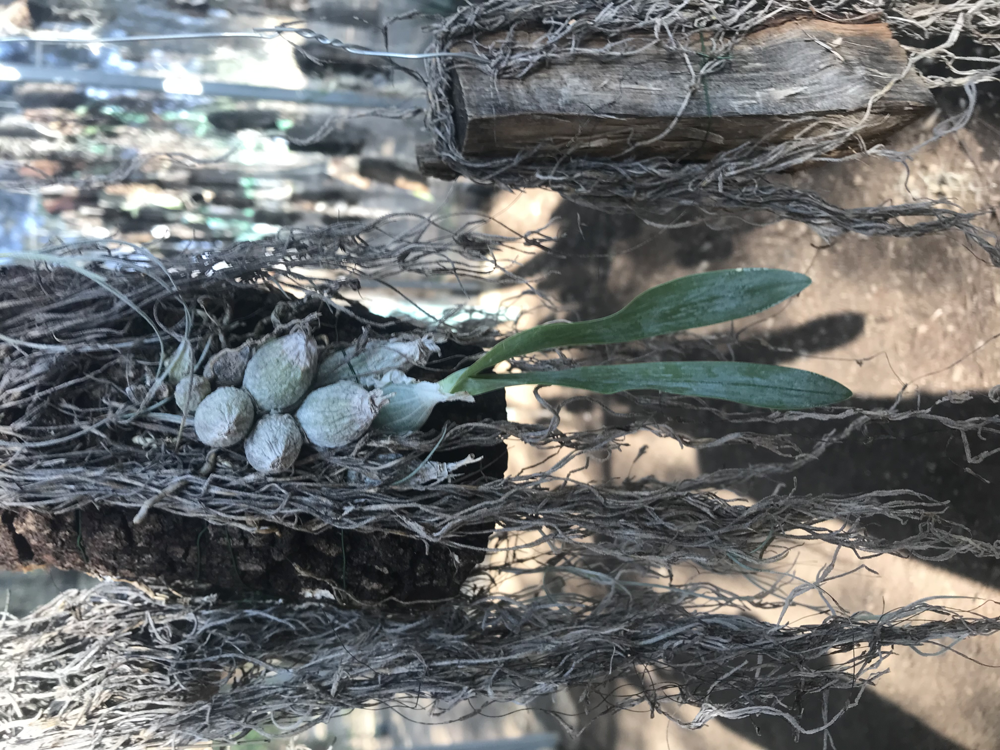
Como en todas las plantas (Harper et al., 1977), las estructuras vegetativas y reproductivas que se generan a partir de la yema de iteración se repiten como una unidad o módulo y forman el cuerpo de la orquídea, por lo que dice que éstas tienen un hábito de crecimiento modular (Holttum, 1995). Por ejemplo, el módulo de crecimiento en Prosthechea karwiskii está representado por una yema de reiteración, el pseudobulbo, las hojas, el rizoma, las raíces y las flores y los frutos, mientras que en Cypripedium irapeanum corresponde a una yema de reiteración, el rizoma, las raíces, el tallo, las hojas, las flores y los frutos (Figura CDC.3). Para un dessarollo más detallado de la morfología de la plantas y el efecto que pudiese tener el crecimiento modular y los proceso evolutivos vea el libro de Carlos Herrera (Multiplicity in Unity) (Herrera, 2009)
La forma, estructura o aspecto final de todas las orquídeas (i.e. erectas, rastreras y colgantes), denominado hábito de crecimiento, es otro aspecto que también está asociado con las yemas o brotes de reiteración, en específico con la posición de estas estructuras. Se han descrito dos tipos de hábitos de crecimiento en este grupo de plantas: el monopodial y el simpodial, en los cuales la yema tiene una posición apical o una axilar, respectivamente (Dressler, 1993; Hágsater, 2005).
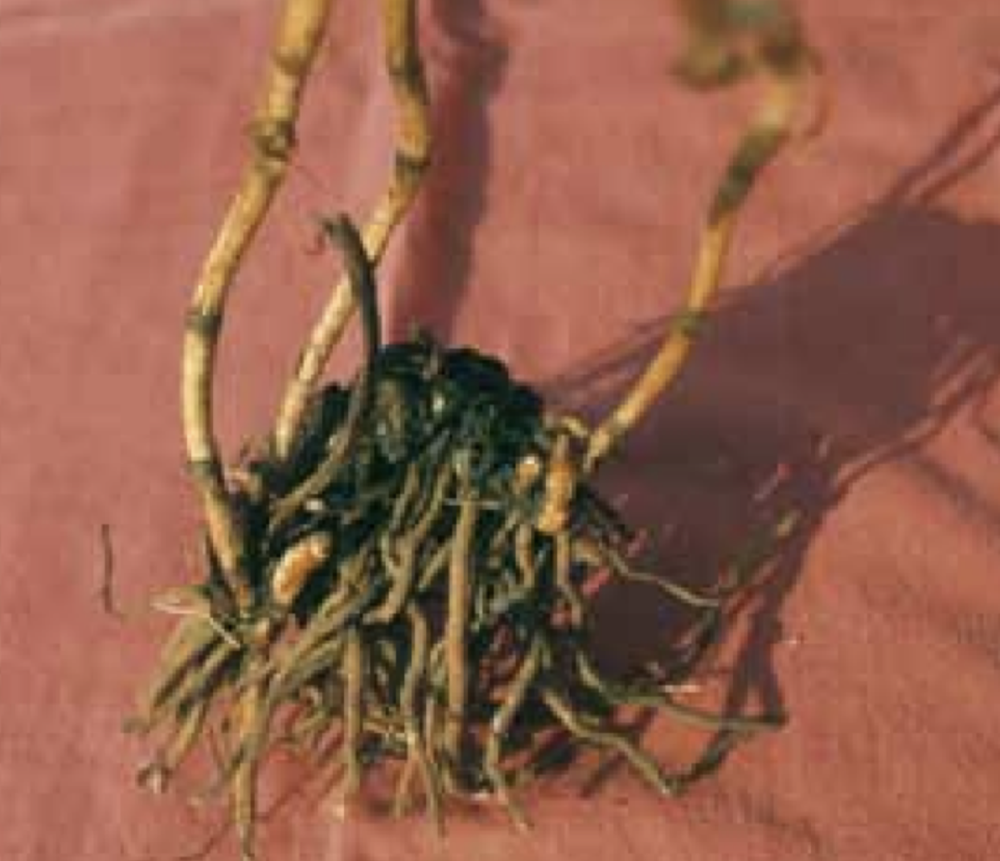
El hábito monopodial se caracteriza por la presencia de un eje vegetativo principal o tallo único vertical (i.e. módulo), el cual es producto de la reiteración consecutiva de la yema apical y presenta flores o inflorescencias laterales (Dressler, 1993). Este patrón de crecimiento está presente en Campylocentrum, Dendrophylax, Dichea, Renantera, Vanilla y Vanda (Figura CDC.4).
El hábito simpodial se caracteriza porque el crecimiento es a través de brotes o vástagos consecutivos (i.e módulos), agrupados o separados, y unidos por un rizoma, los cuales se generan a partir de una yema axilar situada basal, lateral o apicalmente en el brote anterior. En este hábito, las flores o inflorescencias en las plantas adultas son apicales o laterales, tal es el caso de: Cypripedium, Laelia, Prosthechea (Figura CDC.4).
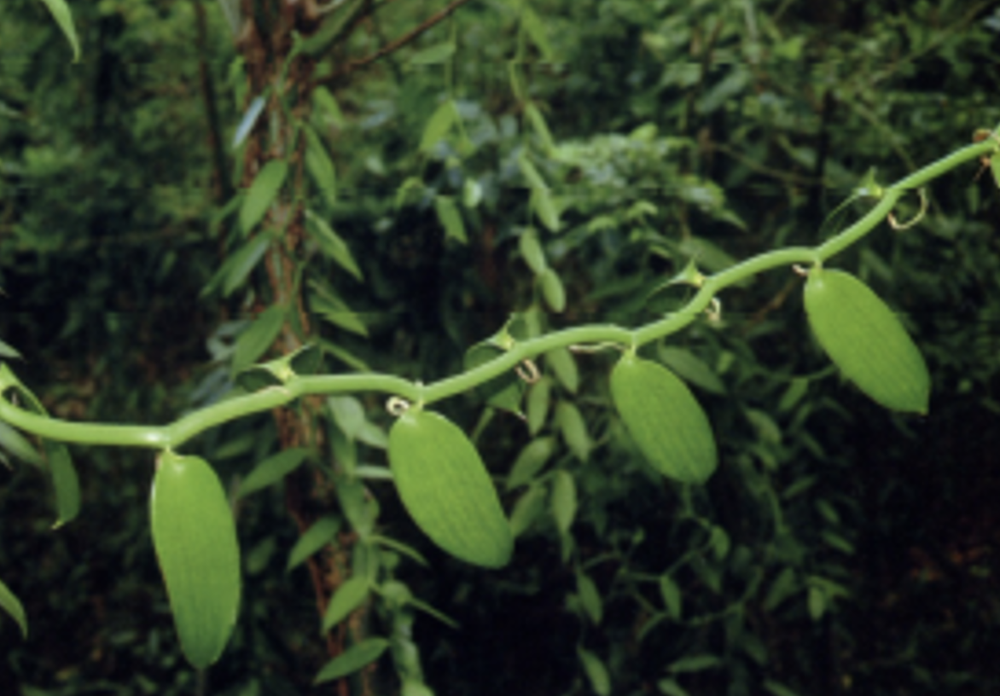
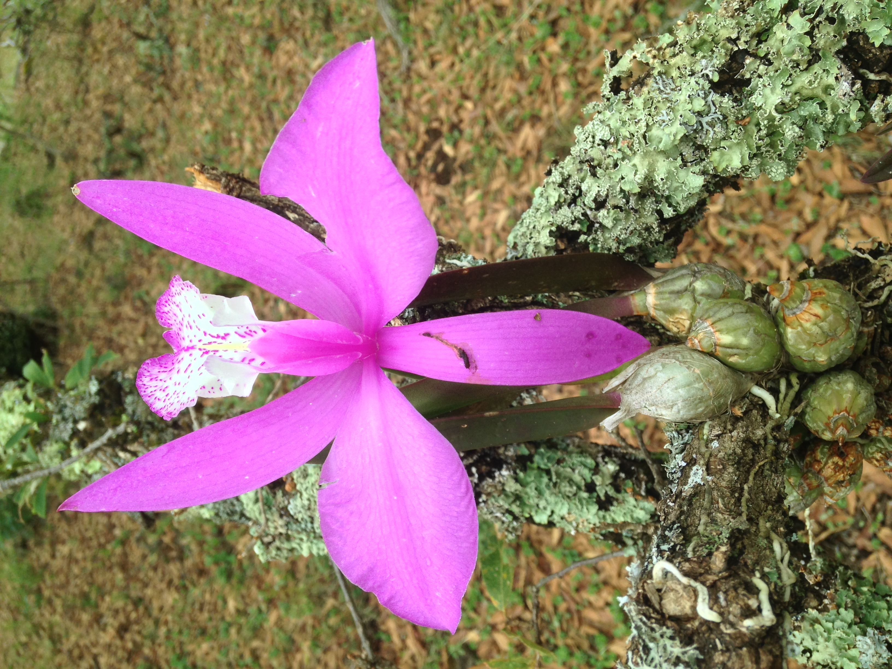
De acuerdo con Rasmussen (Rasmussen, 1986), en las orquídeas existe más de una yema de regeneración, las cuales se clasifican por su actividad dos tipos: de renuevo y de reserva. Las primeras son aquellas que se activan y dan continuidad al crecimiento de una planta en cada temporada, mientras que las segundas se activan eventualmente; por ejemplo, cuando la yema de renuevo es eliminada por el ramoneo por algún herbívoro (Emeterio-Lara et al., 2016), o, cuando las condiciones ambientales son favorables para sostener el desarrollo de más de un módulo. En este último caso, la activación da origen a nuevas líneas o frentes de crecimiento que amplían el tamaño de las plantas, como se ha observado en Cypripedium irapeanum y Govenia lagenophora (Hernández-Apolinar et al., 2012; Martı́nez-Villegas et al., 2024).
El método y técnica de muestreo depende en gran medida del tipo de crecimiento (i.e. epífito, rupícola o terrestre) que presente nuestra especie de interés. No solo eso, también de esta condición depende el grado de dificultad y el tiempo que se invertirá en la toma de datos. Para facilitar esta colecta de información se han implementado distintas técnicas de muestreo según su tipo de crecimiento, las cuales se describen a continuación.
Las orquídeas epífitas y rupícolas viven a distintas alturas en árboles y acantilados. En la colecta de información de estas poblaciones se utilizan desde una simple escalera hasta equipo de alpinismo para ascenso. Desafortunadamente, estas técnicas también han sido usadas para la extracción ilegal de orquídeas con este tipo de crecimiento (Drugs & Crime, 2024).
El uso de escaleras es una técnica muy práctica si la especie de estudio se desarrolla en las zonas bajas de los acantilados o en forofítos como arbustos y árboles de porte bajo a medio (Hernández-Apolinar, 1992). Sin embargo, esta técnica tiene la desventaja de transportar el instrumento de trabajo hasta el sitio de muestreo.
La técnica de rapel resulta muy útil y segura cuando las orquídeas se distribuyen a una altura considerable de un acantilado e implica el descenso mediante cuerdas hasta llegar a las orquídeas a muestrear. En esta técnica debe subrayarse que, si se carece de experiencia es importante recibir apoyo de gente experta (Larson & Batson, 1978).
La técnica de ascenso de una sola cuerda es muy segura (Jepson, 2000), si se trata de orquídeas epífitas habitando hospederos de porte medio y alto con troncos y ramas gruesas (Figura CDC.5). Pero tiene algunas limitaciones como es la dificultad de acceder a ramas delgadas en los estratos muy altos. Al igual que en la técnica anterior, si se carece de experiencia en el ascenso de árboles es importante recibir apoyo de expertos.
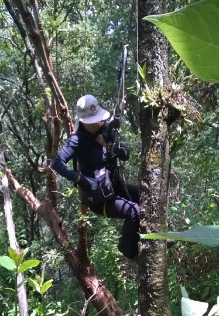
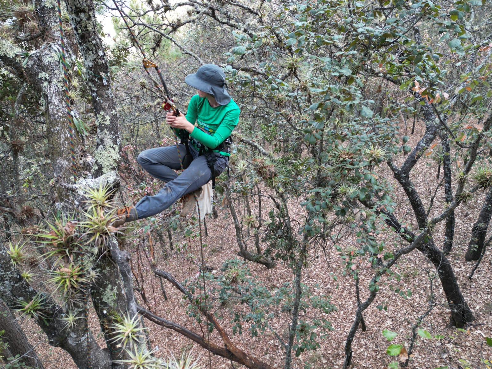
Debido a que la copa de los árboles no es un ambiente homogéneo (Johansson, 1974; Catling, 1986), durante el ascenso se debe reportar la zona en que se encuentran las plantas marcadas. Esta información permite suponer las condiciones microclimáticas preferentes para la especie. De acuerdo con Johansson (Johansson, 1974) y Catling (Catling, 1986), en un árbol hospedero existen seis zonas o estratos (Figura CDC.6), en las cuales es distinta la predominancia de epífitas vasculares y no vasculares (Tabla 1). Particularmente, en los estratos medios II, III, IV se registra la mayor concentración de orquídeas (Mondragón, Maldonado & Aguilar-Santelises, 2007). La Zona VI está asociada a las ramas más externas y delgadas del árbol, las cuales sobrepasan el limite de la zona V, en donde raramente se encuentran algunas orquídeas (Figura CDC.6).
Figura de las zonas de vidas de epifitas basado en Johansson (1974) y Catling (1986).
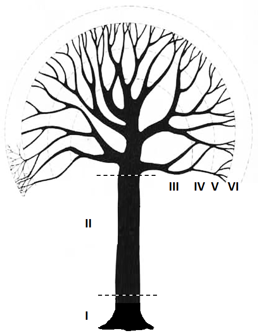
Las zonas se pueden describir de la siguiente manera:
| Zona | Descripción |
|---|---|
| I | Parte basal del tronco, donde se encuentra musgo y líquenes |
| II | Tronco hasta el inicio de las primeras ramificaciones |
| III | Zona inicial de las ramas o copa interna del árbol |
| IV | Zona media de las ramas o copa media del árbol |
| V | Zona final de las ramas o copa externa del árbol, la ramas más pequeñas que la zona IV |
| VI | Ramitas delgadas de los árboles |
Es la siguiente tabla damos unos ejemplos de orquídeas en cada una de las zonas. Nota que no es una lista exhaustiva, ya que hay muchas más especies que pueden encontrarse en cada una de las zonas. En adición la arquitectura de cada árbol, va influenciar la presencia de cada zona y hay orquídeas que se encuentra en más una zona. Hay especies que se van a encontrar en más de una zona.
Zona | Epífita dominant | Orquídea predominante | Especie | Referencia |
|---|---|---|---|---|
I | Capa de musgo | raramente | Lepanthes caritensis | @tremblay1997lepanthes |
II | Plantas trepadoras | Orquídeas miniatura y grandes | Oncidium altissimum | Tremblay observación personal |
III | Pteridophytas y otras epífitas vasculares | Orquídeas miniatura y grandes | Campylocentrum faciola | Tremblay observación personal |
IV | Orquídeas | Mayor concentración y diversidad de orquídeas grandes y miniatura | Laelia autumnalis | @emeterio2021does |
V | Líquenes | Mayor concentración y diversidad de orquídeas grandes y miniatura | Hintonella mexicana | Emeterio-Lara obervación personal |
VI | Líquenes | Pocas orquídeas, miniatura | Tolumnia variegata | @ackerman1996seedling |
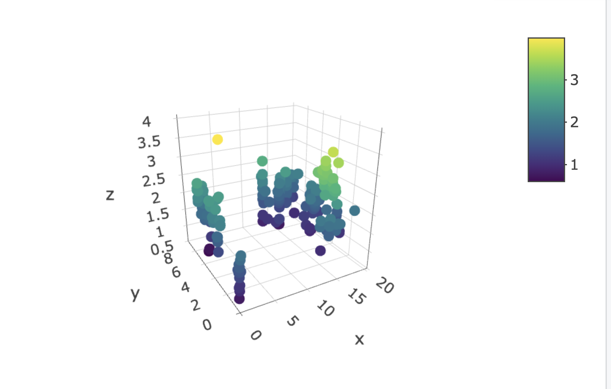
Los arboles tiene una distribución espacial en dentro de una área de muestreo, pero la figura anterior muestra como los epifitas que no es en dos dimensiones solamente. Ese componente espacial en 3 dimensiones puediese influenciar los características demográficas de los individuos. Por ejemplo en Tolumnia variegata si la planta ubicada en las ramitas más externa (más sol) versus las del interior del árbol (en la sombra) impacta su esfuerzo reproductivo(Tremblay, Ackerman & Pérez, 2010).
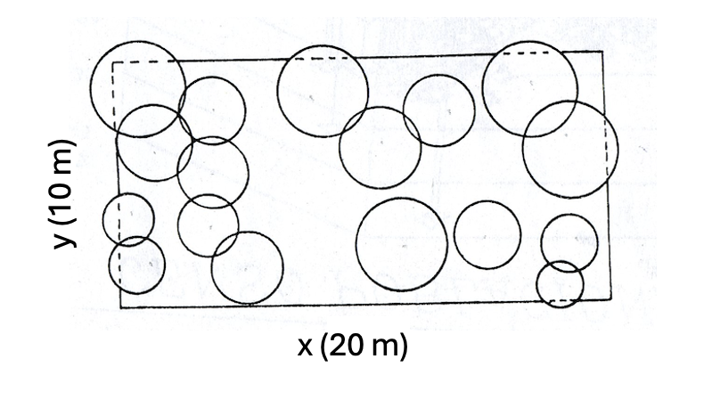
En el muestreo de poblaciones de orquídeas terrestres se han implementado varias técnicas de muestreo, en esta sección nos referiremos a dos: El método de triangulación y el método sin área. El primero permite estimar el área en que se establece la población, mientras que el segundo no permite establecer esta variable y se centra en el marcaje de individuos.
La dinámica o cambio en una población se evalúa marcando y siguiendo a todos los individuos que se encuentran en un sitio (i.e. censo) o de solo una parte de éstos (i.e. muestreo) entre periodos de tiempo (tipicamente anual) a lo largo de sus distintas etapas de desarrollo (i.e. semillas, plántulas, juveniles y adultos). Sin importar si censamos o muestreamos, tenemos que asegurar tres aspectos durante el marcaje o etiquetado de una población:
que se incluyan individuos de todas las categorías de etapa/estado que conforman una población,
que el número de individuos sea suficiente para poder llevar a cabo un análisis demográfico robusto que refleje, con cierta precisión, la dinámica de la población seleccionada,
que el registro de la información en campo sea fácil, consistente y sin error, lo cual minimizará los errores durante la recolección de datos.
Debido a la naturaleza sésil de las plantas, una vez delimitada la población resulta relativamente sencillo contar e identificar a todos los individuos en su estado juvenil y adulto, si se toma en cuenta su aspecto morfológico similar y la presencia o no de estructuras reproductivas (i.e. flores, inflorescencias y/o frutos; ver Sección Etapas o estados de desarrollo en orquídeas). Sin embargo, la identificación y monitoreo de semillas y plántulas es muy difícil de lograr en campo, de ahí que señalemos las siguientes consideraciones:
El método más usado para evaluar la germinación en el medio natural es la introducción de bolsas pequeñas de malla de plancton (Rasmussen & Whigham, 1993; Rasmussen, 2011; Anghelescu et al., 2023). Estas bolsas son selladas y contienen un número de semillas definido, posteriormente se colocan en el suelo o sobre los árboles (v.g. ramas, tronco) y se recogen en uno o distintos periodos del año a fin de evaluar la germinación y el establecimiento de nuevos individuos (Emeterio-Lara et al., 2016).
Durante el muestreo de Cypripedium irapeanum, una orquídea terrestre, se encontró un número muy limitado de plántulas en el campo. Estos individuos tuvieron una talla pequeña y además presentaron una morfología distinta a la de un adulto, al ser tallos muy delgados y de apariencia semejante al de un pasto. Durante su búsqueda se urgó principalmente en derredor de las plantas juveniles y adultas de la misma especie, ya que varias se ubicaron en esta zona (Figura DCD.9).
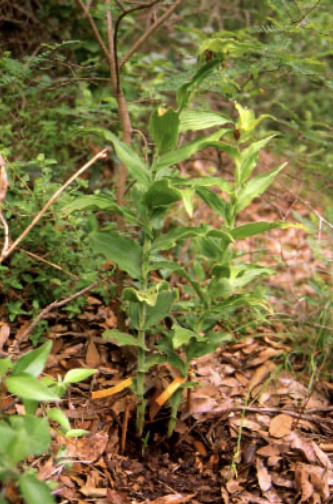
Las plántulas son los individuos más pequeños en la población de orquídeas epífitas, los cuales pueden no reconocerse con facilidad al estar cubiertos de musgo y liquen. Tremblay (com. pers.) ha encontrado a estas pequeñas plantas en alrededor de las plantas adultas, por lo que recomienda esta estrategia de búsqueda en esta fase de desarrollo. Cuando más de una especie del mismo género comparte el mismo hospedero, la identificación se complica; por ejemplo, las plántulas de Lepanthes se establecen entremezclas en el mismo forofíto y carecen de caracteres distintivos en esta etapa, por lo que es imposible distinguirlas por especie (Tremblay & Hutchings, 2003); esto se logra únicamente cuando se marcan y siguen cuidadosamente a etapas posteriores (juvenil o adulto). A través de esta estrategia, el autor ha logrado distinguir entre plántulas de Lepanthes eltoroensis y L. woodburyana, las cuales se diferencian en la forma de crecimiento del tallo. Al continuar el desarrollo, Lepanthes eltoroensis tendrá un crecimiento postrado, mientras que será erecto en L. woodburyana. Si bien este método es bueno, es importante considerar que puede representar un periodo de tiempo largo y que se corre el riesgo de no saber la especie cuando las plántulas no sobreviven a la siguiente etapa o el estudio temrina antes de las plántulas crecer a la próxima etapa.
Para cualquier estudio usando el acercamiento de dinámica poblacional es necesario conocer lo básico de la especie de interés y las etapas/edades que corresponde al ciclo de vida de esa misma y que sea representativo de la historia de vida de esa especie. Poder reconocer las diferentes etapas del ciclo de vida con exactitud es esencial, por ejemplo separar entre las semillas, plántulas, juveniles y adultos (diferentes tamaños de adultos) y si hay etapas latentes. Cuando se define una etapa de vida se debería tener características morfológicas que se puede identificar en el campo con facilidad para reducir los errores de asignaciones a otras etapas. Por ejemplo en Lepanthes (Tremblay & Hutchings, 2003) definió un juvenil como individuo que tiene tallos con vaine lepanthiforme lepanthiform sheath en por lo menos una de los peciolos y que no tiene evidencia de presente o anterior de inflorescencias. Nota que aquí la diferencia entre una plántula y un juvenil es que tenga una vaina lepanthiforme y se diferencia de los adultos con la ausencia de evidencia de inflorescencias seca y activa.
Por ejemplo en la foto que sigue tenemos un individuos que tiene dos hojas, una con inflorescencia activa y la otra hoja con inflorescencia secas, por consecuencia ese individuos es un adulto ya que tiene por los menor una inflorescencia activa (produciendo flores o el potencial de producir flores). Nota no es que la inflorescencia tenga flores es que la inflorescencia es verde (el potencial de producir flores). Hay que reconocer que la vida de una flor puede ser muy corto, y que el muestreo es puntual y no todas las flores se van a poder contabilizar (En algunas especies de Lepanthes las plantas florecen todo el año). Debido que no todas las flores se pueden evaluar cuando estan abierto para remoción del pollinio (esfuerzo reproductivo masculino) o deposición de polen sobre el estigma (esfuerzo reproductivo femenino) se puede contabilizar la cantidad de flores contando las cicatrices de la inflorescencia.
Los cambios en abundancia (i.e. número de individuos) de las poblaciones y los procesos biológicos que influyen sobre ésta se estiman a partir del monitoreo y secuenciación de todos y cada uno de los procesos o eventos por los transitan los individuos por estado de un periodo a otro (v.g. un mes o un año). Esto es sólo posible cuando:
Estos dos sencillos pasos evitarán mezclar la información entre individuos de una misma población o confundir la información con plantas de otras poblaciones o periodos de tiempo. Es decir, la calidad de nuestros datos dependerá, en parte, de cómo marquemos y de qué calidad sea el material que usemos para el marcaje.
La calidad y la durabilidad del material de marcaje es muy importante cuando hacemos un estudio poblacional, más aún cuando se trata de uno de largo plazo. Si las marcas se desintegran de un periodo a otro, se perderá la identidad de cada planta y si no nos damos cuenta podríamos suponer dos cosas en nuestro siguiente monitoreo: i) que el individuo murió (al no parecer la etiqueta) o ii) que hay un nuevo reclutamiento en la población (aparece un nuevo individuo sin marca). Esto sesgaría nuestros resultados al suponer un aumento en la mortalidad o, en su defecto, un aumento en el reclutamiento. Naturalmente, ese sesgo dependerá del número de individuos que marquemos (i.e. tamaño de la muestra). Por regla general se ha considerado que a menor tamaño de muestra, mayor es el sesgo.
Las etiquetas de dymo resultan ser un buen material al marcar los individuos de las orquídeas de cualquier tipo de crecimiento (i.e. epífito, terrestre o rupícola). Este material ha resultado ser muy duradero en sistemas tropicales; por ejemplo, fueron legibles después de más de 15 años de haber marcado a individuos de Lepanthes (Tremblay com. pers.). El aluminio laminado es otro material barato y duradero sobre el cual se puede escribir fácilmente (Figura CDC.10a); por lo que, se garantiza la permanencia de la marca o etiqueta y la de las inscripciones que hayamos hechos sobre ésta. Además, este tipo de etiquetas, al igual que las de dymo, puede sujetarse a la planta o colocarse cerca de ésta con diferentes materiales; por ejemplo, hilo de pescador, cinchos de plástico, alambre galvanizado o plastificado, clavos, chinchetas y grapas, entre aquellos más usados (Figura CDC.10b). Un aspecto que hay que cuidar al marcar individuos es que las etiquetas se enmascaren con el ambiente; es decir, que no sean muy grandes, estén protegidas y que no sean evidentes para todos, a fin de evitar su pérdida o, incluso, el robo de plantas por gente ajena a la investigación.
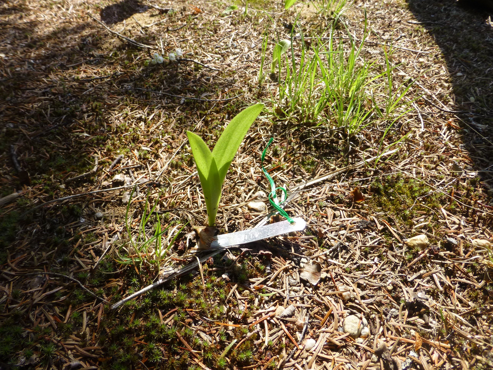
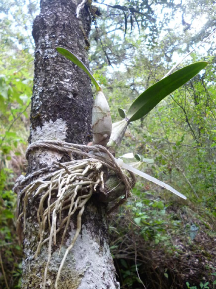
La durabilidad del material usado es muy importante cuando existen eventos en el ciclo de vida de una especie que pueden prolongarse por varios años. Este es el caso de algunas orquídeas terrestres que pueden no rebrotar y mantenerse en latencia vegetativa por más de un ciclo anual de forma consecutiva. Por ejemplo, la latencia vegetativa puede durar un periodo consecutivo de tres años en Liparis lilifolia (Hutchings, 1987; Wells, 1991), cinco a siete años enEpipactis helleborine (Coates, Lunt & Tremblay, 2006; Light & MacConaill, 2006), e incluso ser mayor en Prasophyllum correctum (Coates, Lunt & Tremblay, 2006). Es así que, una buena secuenciación de estos eventos en un individuo en el mediano y largo plazo depende de la calidad del material usado al marcar las plantas, lo cual a su vez permitirá tener buenas estimaciones del tamaño poblacional y la supervivencia y reproducción en la población.
Al igual que los individuos, los sitios de muestreo también se marcan a fin de facilitar su ubicación en el medio natural. Estos pueden ser marcados usando banderines, etiquetas grandes de aluminio o plástico, cinta de señalización (flagging tape) o pintura permanente; asimismo, también se pueden georeferir y hacer mapas de localización. Cuando se trata de marcas de colores, se deben preferir colores poco llamativos camuflajeados con la vegetación circundante. Si el sitio está bien protegido se puede optar por colores fuertes y llamativos; sin embargo, hay que considerar que los animales (mamíferos, aves, herbívoros) pueden ser atraídos por las marcas e ingerirlas o destruirlas (ciertas orugas le gusta la cinta de dymo y dejan su evidencia); de ahí que se sugiere utilizar etiquetas discretas que favorezcan su permanencia en el mediano y largo plazo. Es sumamente importante poner el máximo de esfuerzo en el muestreo consistente entre periodos y tratar de encontrar todos los individuos previamente marcado.
La marca o etiqueta de cada uno de los individuos de una población debe compactar la mayor cantidad de información posible, no solo número consecutivos. Es decir, generalmente escribimos números consecutivos (1, 2, 3, 4, etc.) en las etiquetas que colocamos a cada individuo en campo. Sin embargo, si no hay notas guía, esta información es limitada cuando se retoma la investigación en campo; ya que es difícil determinar cuándo ingresaron los nuevos individuos a la población o cuándo se fragmentó una planta para dar origen a un individuo de una categoría distinta al de plántula. Asimismo, si se seleccionan distintas poblaciones o colonias y los números consecutivos son los mismos, podemos confundir la información y llegar a conclusiones erróneas.
Cuando se estudia una sola población, una forma sencilla de evitar errores y anexar más información es escribir en la etiqueta el año de estudio y el número consecutivo de la planta. Por ejemplo, si el estudio comenzó en 2023 y la población está formada por 152 individuos (i.e. captura), éstos se podrían codificar así: 23001, 23002, 23003, … 23152. En el siguiente año (2024) se revisarán o censarán los 152 individuos originalmente marcados (i.e. recaptura) y se etiquetarán los nuevos individuos que ingresan a la población (v.g. plántulas), cuya marca iniciará con 24 y el número consecutivo (153 en adelante). De esta forma se conocerá el año de ingreso, marcaje e inicio de la captura de datos del individuo, lo cual evitará la redundancia en el código y ayudará a reducir los errores de identificación.
Cuando la orquídea de interés no tiene una distribución regular y tienen una distribución aparchonada (concentradas en un área) en distintas zonas de un mismo lugar, para evitar errores de codificación se sugiere que en cada parche se mantengan números consecutivos (23001, 23002, 23003, etc.) y se evite mezclar los números asignados (23001, 23012, 23043, etc.). Esta misma regla se mantiene cuando se trabaja con distintas poblaciones de la misma especie.
Otra forma de codificar las múltiples poblaciones o subpoblaciones es a través de una codificación alfanumérica, en la que la letra del alfabeto representa a la población y el número a los individuos marcados para su monitoreo. De esta manera, las marcas individuales se verían de la siguiente forma: A23001, A23002, …, 23xxx para la primera población y B23001, B23002, …, B23xxx para la segunda población y así sucesivamente, en caso de estudiar más de dos poblaciones. Una tercera opción es asignar un número a cada población y añadir el número consecutivo correspondiente. En este caso las etiquetas de las plantas número 10 en dos sitios se verían de la siguiente manera: 1.10 y 2.10. Si queremos añadir el año del estudio, éste también puede ser al final y sería de la siguiente forma: 1.10.23 y 2.10.23. Para los nuevos ingresos se sigue la misma lógica del inciso anterior, por lo que la nueva planta 155 que ingresa en 2024 a la población 1 le corresponderá la etiqueta 1.155.24.
Existen distintas formas de colocar las etiquetas o marcas en los individuos seleccionados para el estudio y, por regla general, su ubicación no debe afectar el desempeño de la planta marcada y si asegurar su permanencia en el mediano y largo plazo. Por ejemplo, en las orquídeas epífitas de tamaño grande, la etiqueta de identidad se puede colocar abrazando a la planta, incluyendo la rama o tronco donde se desarrolla, o bien, colocarse abrazando a uno solo de los módulos. En el caso de Laelia autumnalis (Emeterio-Lara et al., 2021), además de la etiqueta de identificación, se identificó otra etiqueta el último módulo (el más joven o reciente) de cada uno de los frentes de crecimiento. Este tipo de marcaje permitió determinar la biomasa nueva que se agrega cada año a cada planta y, al mismo tiempo, permitió identificar la permanencia, crecimiento o retrogresión entre fases de crecimiento.
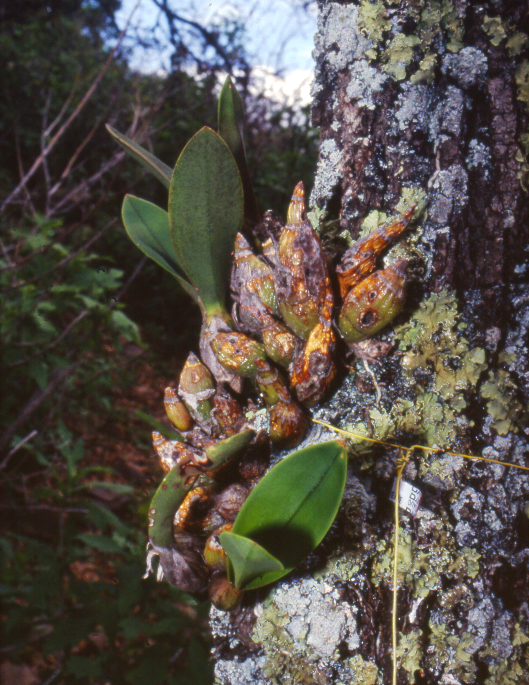
Las plántulas son muy frágiles por lo que para no dañar sus estructuras se debe contar con material suave y, preferentemente, se debe evitar el contacto con las plantas. En Lepanthes eltoroensis, Tremblay fijó las etiquetas a un lado de las plántulas con clavos pequeños y posteriormente cambió a grapas, que causan menos daño al árbol hospedero.
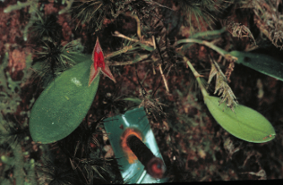
En las orquídeas terrestres Cypripedium irapeanum y Govenia lagenophora las etiquetas de aluminio o cinta dymo fueron amarradas con alambre plastificado a palos o clavos, semejando banderitas, las cuales fueron clavadas en el suelo cerca de los tallos o pseudbulbos de las plantas.
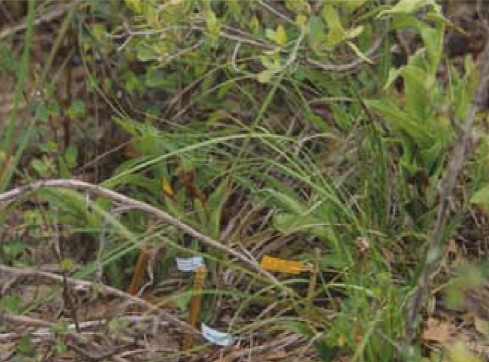
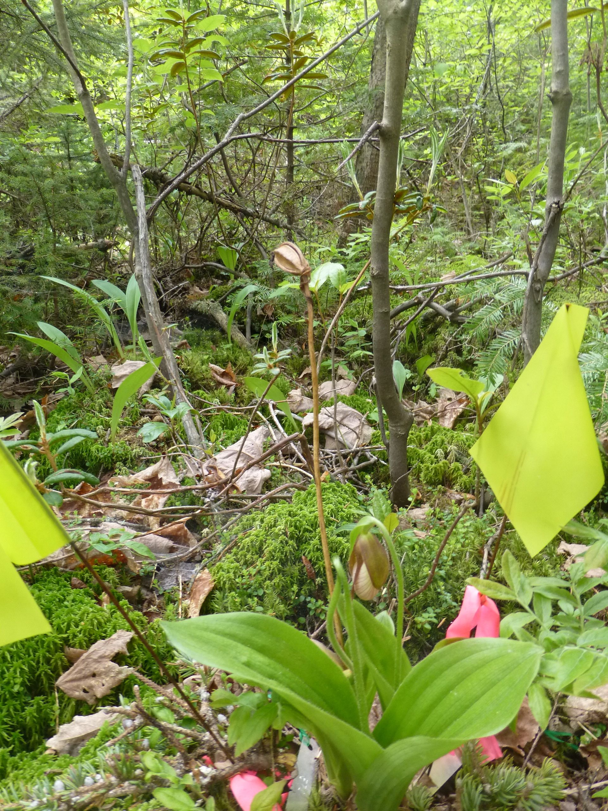
En esta sección se presentan algunos ejemplos de cómo se ha dividido la estructura poblacional en orquídeas con distinto hábito de crecimiento. A través de los ejemplos es evidente que las categorías de etapa/estado no siempre son las mismas en las especies, ya que depende de aspectos biológicos de las plantas (v.g. características morfológicas, de crecimiento, de reproducción), de la información disponible, del número de individuos marcado y de las preguntas de interés en la investigación (Hernández-Apolinar, 1992; Mondragón & Elliott, 2013).
Sin importar las variables que usemos en la clasificación de las plantas, se necesita capturar información relevante en las especies, la cual es común en todos los estudios poblacionales (Tabla 2). La primera información se obtiene al inicio del estudio, definido como el tiempo cero o inicial \(t_{0}\) y se refiere a las características básicas más simples que permiten diferenciar un estadio de otro, mientras que los siguientes periodos de toma de datos, denominados como \(t_{+1}\) (i.e n = 2, 3, 4, … n), permiten entender los cambios que ocurren en los individuos de un periodo a otro (i.e. crecen, se reproducen, viven o mueren) y, además, captar de dónde provienen los nuevos individuos que ingresan a la población (i.e. semilla, origen vegetativo o clonación) en el periodo \(t_{+n}\).
Las variables esenciales (Tabla 2), junto con las características definidas en cada etapa de desarrollo (ver Ejemplos de categorización), permiten conocer, por un lado, cuál o cuáles de las categorías son muy dinámicas o, por el contrario, constantes en el ciclo de vida de la especie de interés; y por otro, el estado de conservación de la población en su conjunto. Esta última definida a partir de la tasa finita de crecimiento poblacional como se establece en el Capítulo XX.
| Variables esenciales en un censo demográfico | |
|---|---|
| Tiempo inicial t_0 | Muestreo posterior t+1 |
| Etapa del individuo | Etapa del individuo |
| Presencia/ausencia del individuo | |
| Presencia/ausencia de flores/inflorescencia y/o frutos | Presencia/ausencia de flores/inflorescencia y/o frutos |
| Cantidad de flores | Cantidad de flores |
| Cantidad de frutos | Cantidad de frutos |
| Cantidad de individuos en la población1 | |
| 1 Especificar si se trata de individuos procedentes de semilla o si su origen es por clonación (v.g. keikis, pseudobulbos separados, activación de yemas de reserva en pseudobulbos y rizomas, etc.). | |
El crecimiento en las orquídeas es a partir de las yemas de reiteración, las cuales se encuentran en la base de pseudobulbos de plantas epífitas y justo por debajo del suelo en los cormos, rizomas, tubérculos y pseudobulbos de plantas terrestres. Con la activación de estas yemas, en cada temporada de crecimiento se desarrollan estructuras que dan continuidad al crecimiento individual, las cuales en conjunto son conocidas como módulo de iteración o unidad de crecimiento básico. El módulo es característico de todas las plantas (Harper et al., 1977) y varía en forma según la especie que se trate. En algunas orquídeas terrestres, por ejemplo, este módulo está representado por un cormo, yemas de regeneración, hojas , flores y frutos; éstos dos últimos cuando se trata de plantas adultas. Las mismas estructuras se desarrollan en otras orquídeas, aunque en lugar del cormo se genera un pseudobulbo, un rizoma o un tubérculo(s), según la orquídea en cuestión.
Las yemas de regeneración se pueden clasificar por su actividad en dos tipos: renuevo y reserva (Rasmussen, 1995). Las primeras son aquellas que se activan y dan continuidad al crecimiento de una planta en cada temporada, mientras que las segundas se activan eventualmente. En orquídeas epífitas como Laelia autumnalis y L. speciosa (Hernández-Apolinar, 1992; Emeterio-Lara et al., 2016), así como en orquídeas terrestres Cypripedium irapeanum y Govenia lagenophora (Hernández-Apolinar et al., 2012; Martı́nez-Villegas et al., 2024), se ha observado que las yemas de renuevo se activan (i.e. generalmente una) y dan origen al nuevo módulo al inicio de una temporada de crecimiento; que se suma a la secuencia de módulos formados en periodos previos. En el caso de Govenia lagenophora el nuevo cormo que se produce, reemplaza al módulo del año previo al morir. Asimismo, estos autores también han reconocido que las yemas de reserva pueden activarse cuando las condiciones ambientales son favorables para sostener el desarrollo de más de un módulo, dando origen a nuevas líneas o frentes de crecimiento que amplían su tamaño (Figuras 1 y 2, cual son estas figuras?).
Si bien las orquídeas epífitas y terrestres son perennes, lo que significa que viven por más de dos años consecutivos. Es importante hacer notar que, el crecimiento es estacional en un gran número de estas plantas; es decir, que la gran mayoría de especies solo producen módulo de crecimiento en una época del año (v.g. lluvias o primavera) caracterizada por presentar las condiciones ambientales (i.e. luz, agua, etc.) adecuadas que permiten su reiteración. Después de este periodo, las orquídeas no tienen actividad y, por lo tanto, no producen nuevas estructuras, y solo captan y/o usan los recursos necesarios para sobrevivir. Este comportamiento es muy evidente en las orquídeas epífitas, pero lo es más aún en muchas de las orquídeas terrestres, ya que éstas emergen del suelo y son evidentes y emergente del suelo sólo en un periodo de año especifico (generalmente lluvias o primavera/verano) para después marchitarse y desaparecer en la época menos favorable (v.g. época seca o fría, con nieve). Sin embargo, el hecho de que no estén visibles no implica que hayan muerto, como sería el caso de las plantas anuales (v.g. cosmos). Por el contrario, como parte de su ciclo de vida, las orquídeas terrestres viven bajo el suelo una parte del año; fase conocida como subterránea o latencia vegetativa (Shefferson et al., 2020). Esta condición es equivalente a la hibernación en los animales, ya que las plantas sobreviven reduciendo sus actividades fisiológicas y consumiendo los recursos que almacenaron en los cormos, pseudobulbos, tubérculos o rizomas, que también son órganos de almacenamiento (referencia). Aunque a diferencia de los animales, la latencia vegetativa puede prolongarse por más de un año en forma consecutiva en muchas especies, cuando la planta no almacenó suficientes recursos o no existen las condiciones ambientales propicias para su desarrollo (Schefferson et al. 2020). Por ejemplo, los tubérculos de Liparis liliifolia (Hutchings, 1987; Wells, 1991) y Orchis simia (Willems & Bik, 1991) pueden sobrevivir de forma subterránea por tres años, mientras que Epipactis helleborine por 5 a 7 años (Light & MacConaill, 2006). En los estudios poblacionales esta situación dificulta la estimación de la mortalidad en las orquídeas terrestres y, en consecuencia, se desconoce la supervivencia real de las distintas fases de desarrollo de la especie y el tamaño real de una población de interés. Múltiples acercamiento han sido desarrollado para considerar el periodo de no avistamiento en la dinámica de orquídeas (Shefferson et al., 2003; Kéry & Gregg, 2004; Shefferson, Kull & Tali, 2005). Nuevos métodos bayesiano para estimar los parámetros de supervivencia condicional basado en si la plantas eran vista el año anterior o no y la cantidad de años sin ser vista han ayudado a estimar parámetros del ciclo de vida más consonó al los patrones naturales de las especies (Tremblay et al., 2009a; Tremblay et al., 2009b).
En esta sección mencionamos algunas de las clasificaciones de las etapas de desarrollo en orquídeas terrestres y epífitas, que han sido utilizadas en distintos estudios poblacionales. En la mayoría de los casos, las categorías se definen a partir de la morfología de los individuos y su actividad reproductiva, aunque también se han considerado otros aspectos como el número de módulos o pseudobulbos por planta, el número de hojas y la presencia o ausencia de flores y frutos. En algunos casos, se ha considerado la presencia o ausencia de inflorescencias secas como un indicador del estado del individuo. En algunas especies terrestres hay de vez en cuando una etapa no vista, donde no se sabe si el individuo es vivo o latente.
En esta sección se presenta algunos ejemplos de estructura usado en diferentes trabajos para categoriazar los estados de desarrollo en orquídeas terrestres y epífitas. En la mayoría de los casos las categorías se definen a partir de la morfología de los individuos y su actividad reproductiva, aunque también se han considerado otros aspectos como el número de módulos o pseudobulbos por planta, el número de hojas y la presencia o ausencia de flores y frutos. En algunos casos se ha considerado la presencia o ausencia de inflorescencias secas como un indicador del estado del individuo. En algunas especies terrestres hay de vez en cuando una etapa no vista, donde no se sabe si el individuo es vivo o latente.
Martínez-Villegas y colaboradores (Martı́nez-Villegas et al., 2024) definieron cuatro categorías de estado (i.e. Reproductivo, No reproductivo, Cormo y Ausente) para la orquídea terrestre Govenia lagenophora, cuya dinámica poblacional fue analizada en la Reserva del Pedregal de San Ángel, Ciudad de México, México. La estimación de las variables poblacionales fue estimada a partir de cuatro años de monitoreo.
Reproductivo: Individuos con hojas y con inflorescencia.
No reproductivo: Individuos con hojas y sin evidencia de ser reproductivos
Cormo: Individuos latentes, sin producción de hojas o inflorescencias.
Ausente: Individuos no detectados.
Tremblay y colaboradores (Tremblay et al., 2009a; Tremblay et al., 2009b), estudiaron nueve especies del género Caladenia en distintas localidades de Australia, cuya demografía fue analizada a partir de tres categorías de estado: individuos vegetativos, individuos en floración e individuos latentes.
Hernández-Apolinar (Hernández-Apolinar, 1992) por su parte trabajó con la especie epífita Laelia speciosa, en la cual se identificaron cuatro fases: plántulas, juveniles y dos estadios de adultos. Las fases de adultos y juveniles se determinaron a partir del conteo de módulos, que en este caso se trató del número de pseudobulbos por planta. A continuación, se define cada categoría considerada.
Emeterio-Lara y colaboradores (Emeterio-Lara et al., 2021) estudiaron poblaciones de la orquídea epífita Laelia autumnalis. Las plantas de Laelia autumnalis fueron clasificadas en cinco categorías con base a su biomasa.
Hutchings (Hutchings, 2010) analizó la dinámica poblacional de Ophrys sphegodes por 30 años. Esta orquídea terrestre se monitoreó durante su fase aérea, considerando la presencia o ausencia de plantas. A las plantas que emergieron del suelo se les trató como ramets (i.e. plantas independientes con la misma información genética), debido a que de los tubérculos (i.e. órganos de perennación subterráneos) de Ophrys sphegodes se da origen a más de una planta. Por convención los ramets (i.e. fragmentos de una planta con vida independiente y con la misma información genética) se analizan como si fueran genéticamente independientes.
En el estudio utilizaron tres categorías para su análisis:
Ackerman y colaboradores (Ackerman et al., 2020) trabajaron con tres poblaciones de Brassavola cucullata en las Islas de San Eustaquio y Saba, en las Antillas. En estas islas, la especie presenta un hábito de crecimiento epífito o rupícola.
Usando el número de hojas se establecieron cuatro categorías de estado:
Zotz y Schmidt (Zotz & Schmidt, 2006) analizaron el comportamiento poblacional de Aspasia principissa en la Isla de Barro Colorado, Panamá. A partir del tamaño del pseudobulbo más reciente, los investigadores determinaron siete categorías de tamaño en la población. Además, se evaluó la presencia de flores y frutos en las plantas con un pseudobulbo reciente mayor a 7 cm de altura.
Tremblay (Tremblay & Hutchings, 2003) en su estudio con el género Lepanthes, una orquídea miniatura epífita, definió cuatro categorías generales básicas que permiten establecer la estructura de su ciclo de vida:
Estas categorías básicas fueron las usadas para el análisis poblacional de de L. caritensis (Tremblay & Hutchings, 2003). Sin embargo, el autor destaca que estas categorías pueden subdividirse, siempre y cuando se tengan un buen tamaño de muestra y se tengan claras las características tomadas en cuenta. Por ejemplo, el número de categorías aumentó a cinco al incluir una segunda etapa de adulto reproductivo en L. rubripetala y L. eltoroensis, e incluso pasó a seis en L. rupestris al incluir además otro estado no reproductivo (Tremblay & Ackerman, 2001).
Revision: